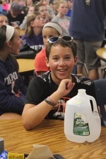
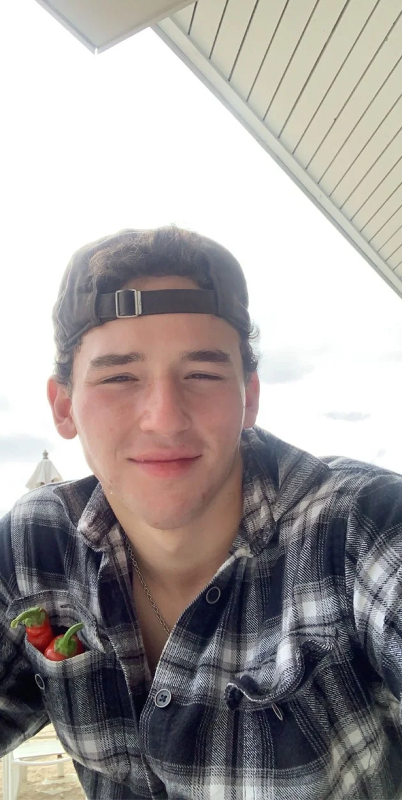

In Scotty’s own words
His words. His voice.
Scotty’s poetry offers a window into the way he experienced the world. Here, his real writing has a home.

The poems he left us
Written by Scotty. Shared with love.
Scotty wrote about growing up, friendship, identity, family, independence, and finding his place in the world. His poems belong here in his own words.
Select any title below to read the full poem.

In Scott’s words
His original poetry
These poems are reproduced from the original manuscript, preserving Scott’s capitalization, punctuation, grammar, word choice, and mature language.
I Want to Fly Like an EagleScott Dansker · 8/31/2018
To the beautiful town of mine,That falls to its own demise.Yes there are substitutes for happiness caffeine, marijuana, nicotine but I still don’t believe.The fight I make to survive in a town where I don’t subside into some random compromise, where everything and everyone is okay, ‘cause they’re not.People are fakin it,parents are making it,all you gotta do is match everyone or else you will be forsaken it.You gotta dress like them,You gotta talk like them,You gotta walk like them,‘Cause that’s the only way to survive in a town where everything is afraid of everyone.Now,If you try to defy these rules that have been locked up tight and you try to spread your wings, you try to fly, you will be shot down by everyone you know and love. Because if you see like I see then you will see right through the lies that are hidden behind this beautiful town of mine. Then you will see why you can’t spread your wings and you cannot fly.But,If your color isn’t the same as lined paper and the Holy Lord, Jesus Christ ain’t by your side you will be rejected, neglected, and never respected. There is too much restraint holding me back from being the best person I can be and strive to be. Too many people say I am wrong when I know I am right.I’m tired of being like everyone else when I know I can be better. It’s time to get my hands wetter, perform better, and fight back. Because if I try hard enough everyone will be a forgetter.They will forget those times when I messed up,Fessed up,And I didn’t dress up.Because I don’t wanna match everyone elsebut I have to.It’s not a choice anymore, it’s a need.I can’t catch that speed that I need to succeed,if I let this town drag me down.
A Selfie-Centric WorldScott Dansker · 4/1/2019
How 'bout people stop being so jealous and open their eyes,To a whole new side, that ain’t part of their narcissistic lives.Just trying to say that the misconception of people's lives is driving them to an insolvable derive,That stems from the human race's drive to work without compromise.I can’t speak for everyone, but I can speak for myself. Every good thing I do is a plea to be appreciated by society’s over the top needs to make everyone compete about giving a hand to the lower class, so the rich doesn’t fall into defeat of uncomprehending possibilities.Most of this doesn't make sense,and everyone reading this is in dispenseabout their lives being so accurately recorded bysome boy rhyming his heart away on an indecisive pray that maybe the world will one day understand the rayof lies that contain even the brightest minds.How come I don’t hear about a new Washington, Franklin or Plato anything guys?The world is dying and people know it. The last spark of hope was Donatello’s paintings of the Divine.My history ain’t great, but I hope people understand that there is no one like the historic’s because the human kind can’t stop flashing selfies and take the time to look around and see what can be modernized.
ConfusedScott Dansker · 11/14/2019
I don’t know what to doMy emotions are construedI can’t tell if people want to be around meOr just want me to buy them food.I know I’m funAnd I think I’m greatBut over time am I too much to take?People have drifted from me and act like I don’t see itBut I do.So why can’t they just be rudeSpeak their mindInstead of playing with mine?I’m tired of trying to figure things outWhen really all the gossip means nothingI love people and I wanna be so niceBut some people hand me the knife.Why everybody gotta be so confusingEspecially those who be using?I just want u to knowBy constantly refusingChanging your mind like it goes with the tideBy not communicating with words but attempting to let ur actions be the guide,That’s what makes my brain fried!I’m tired of trying when people just be flat out lyin’to my faceMaking me feel like a disgraceJust stop being so fake!Take control of your lifeKnow what you wantBut don’t take too longCause the train waits for nobodyNot even someone in your mental state.
Breaking FreeScott Dansker · 4/18/2019
My life be a spiral of up and down messages,one minute I’m hot,and the next I’m not.Why do people have to wear a label on there head sayingI’m cute or I’m a thot?Those messages on our heads confine us to a state of mind that can’t be changed till you go outside the social construct of life that locks up the full size of our beautiful lives.People say to be cute or “fly”but why try to be something that is a lie?Why can’t the word perfect be redefinedinto terms that makes sense to everyone,like amazing, beautiful, and smart,but on the inside not out?I personally believe that if us people came together and started to retalitize our ever changing lives,we could destroy the walls that confine us in our own demise.We would find that being our one selfis better than looking top shelf.We can be the new era where happiness is the goal,not money or fame,because as a wise man once said,Those with the happiest lives have the best lives.So why can't everyone just live their best lives, and dive head first into a world full of surprise?
CampScott Dansker · 10/28/19
As I look around myself I feel so compelled to smile and hug.The vibrations and energy coming off otherscausing a chain reaction that factions the result of happiness.Happiness is different for everyone and anyone.But all people conjugate you the source of power that people associate.Love, kindness, smiles, and hugs,Even though there are so many bugs.Camp is a place where anyone can be anything, but most are true to themselves.Camp is a place where people’s true colors are shown, Where people accept others for who they are. Not who they know.Camp is a place to learn from others, And not just stick to yourself.The concept of acceptance is easy to grasp, But not to execute - Most people just reboot.Go back to the lines that society draws for them.Most people can’t comprehend how a few nice words could mend a broken soul.That almost feel of the deep-end.Camp people know this -And now you do.Spread the word To stop the impending doomthat so many souls see so soon.
LostScott Dansker · circa 2020
My mind is dead,my body feels like lead.I have lost control in my soul.The energy I radiate feels like a black hole.My body is a landscape,but my mind feels like its lost in spacethe gap inside me feels like a mace.Although all this time I have to put on a pretty face,this feels like a never ending chasethat I can never escape leading me into death’s warm embrace.It is almost a disgraceto discard a life that was given such grace,I complain about my life like a court case.I was given so much right out of the gate,so then why does my mind argue I should be in a distressed state.
UniqueScott Dansker · 10/5/2019
Everybody is different,No one is the sameThen why do I treat people blain?I don’t take the time to listen to them complainI just pretend I understand there painI don’t talk I just take charge, AssumeNo place for them to walkI thought I treated everyone differentlyEspecially those who I lovedBut I rise no one aboveI keep those I know behind a gateThe gate I can’t escapeThe gate I can’t shakeThe gate That can’t let me be my own shapeI asked myself when was the last time you were trueAnd didn’t move so fastI tell myself to slow downKeep your head downI cover myself in confidence so others won’t see the true meI showered myself in all these pickup lines and liesI don’t even know if the real me is still alive
KindnessScott Dansker · 4/11/2021
Things i associate with the word kindnessare also things that make peoples livesenlightened.When i commit an act of kindness i can’tstop but feel excitement.The way someone’s smile will widenand there face will glow like lightning,makes these acts of appreciation reallyworth trying.It’s almost like looking over the horizonand it creates a sensation of people beingunited.
MomScott Dansker · 5/2019
Most people if not all love theirMothers,Fathers,Sisters and Brothers.But a mother is the one who holds everyone so tight, Stops all the fights, and cooks dinner every night.Now look nobody is perfect, and everybody deserves love and appreciation.No abbreviations.Love is something not every possesses,most people repress it,Some can’t even express it.But I can say for suremy mom gives more love than anyone perceives,She does so much for everyone you wouldn’t even believe!People mostly look past her, but even the dog knows she’s the master{Mom},I want you to know I will always turn your seat heater on ‘cause I’m that much of a bastard
In ExileScott Dansker · 11/29/2020
I haven’t written something for a whilebut I have been treating my life in exileI disregard my deepest desiresto achieve this role that has already expiredI crave for attention,is what i tell myself to conclude my actions for these actsBut honestly that reasoning is pretty wacki love myselfand i know my own attention is all i needthat is trueit is the care for others that i lackand that leaves my head askewdeath is a concept so hard to conceptualizebut i don’t know why we make it so monetizedfunerals are for those to let go of the pastbut we are living in the future so why go back and make those memories lastpeople come and go and don’t get me wrong i care about othersbut it is the selfish nature of all human beings that makes me wonderif it all goes into the gutteri don’t see the point why i would open up to othersjust for them to tell there mothers of my primal nature just creatingbad behavior and non confirming angerthat brings me to quaver and return back to my chamber
FriendsScott Dansker · 11/16/2020
Friends.Such a simple conceptyet they come and go like trendsI don’t wanna make amendsbut some of these “friends”intends are not always contentreal friends are those who don’t only see youthrough one lensPeople talk to me say hi all the timesometimes the’ll even gawk at meI don’t understand why fake friends existbecause everyone talks about those peoplethe same way they do a cystwhy do they feel the need to coexist with me?It just gets me pissednow i am going to persistthat someone explain to me why people insiston being a fist that hurls its way through meand eventually gets on my blacklist.
My 8 Reasons WhyScott Dansker · 5/12/2019
(This poem is dedicated to my mom who is the best mom in the world) - Scott DanskerYou are my world,You are my lifeYou are my reason whyYou are my love,You are my pride,You are the reason whyYou are my thoughts,You are my lies,You are the reason whyYou are my queen,You are my lives,You are the reason why,You are my reasons why and nothing will change my 8 reasons why.
Tangled EmotionsScott Dansker · 10/18/2019
My brain feels condensedMy feelings are compressedMy body is denseThe energy that once surged through meRefined meMade memeLeftEven though i know what I did was rightWhy it feelin’ so wrongI feel like a fucking fraudShe made me feel safe and warmI never wanted anyone moreWhen I had her in my armsI felt the highest I’ve ever beenThe proudest I’ve ever beenIt felt as if I was flyingNever cryin’She took away my deepest demonsReplaced them with her love and affectionBut she just be giving others the same attentionNow I ain’t saying that's wrong she’s so great I couldn’t even imagine keeping her all to myselfBut she told me she wanted mejust meAnd she had meI thought I had herBut obviously we didn’t have the same vision I see.She whipped my heart with a beltShe couldn’t control how she feltJust like how ice cream meltsShe taught me so much about myselfI couldn’t be more glad she felt how she feltI will never be more happy I met herAnd won’t forget her
Something worth sharing
Scotty’s poems help us remember the whole person.
We hope readers will come to know his curiosity, humor, strength, questions, and kindness — one original poem at a time.
More about Scotty →